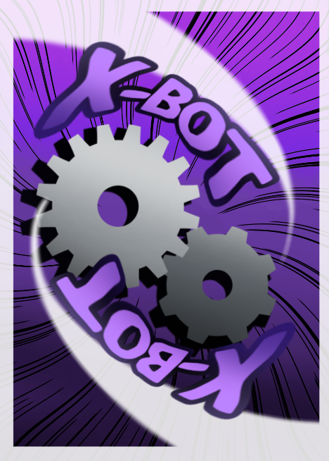

Voltar ao Hub
OdisseIA
JORNADA CONCLUÍDA
Parabéns! Você concluiu a jornada.
Você passou pelas estações do OdisseIA e validou cada uma delas. Como recompensa, o X-BOT foi desbloqueado.
/
ESTAÇÕES VALIDADAS
RESUMO DA JORNADA

DESBLOQUEADO
X-BOT
O X-BOT foi desbloqueado. O jogo desenvolvido para o OdisseIA agora faz parte da sua jornada.
Voltar ao Hub
Voltar ao Hub
OdisseIA / Conclusão
JORNADA INCOMPLETA
Conclusão ainda bloqueada
Para ver a conclusão, é necessário validar as 4 estações da jornada.
PROGRESSO DA JORNADA /